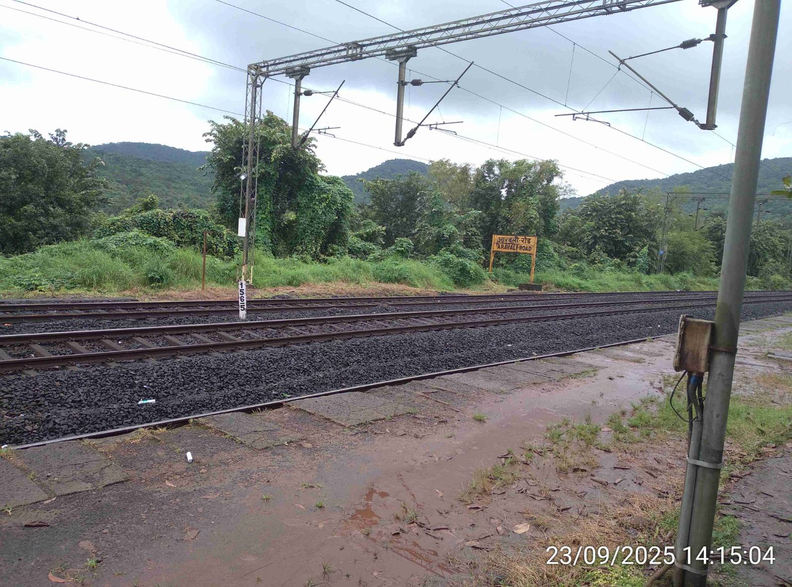
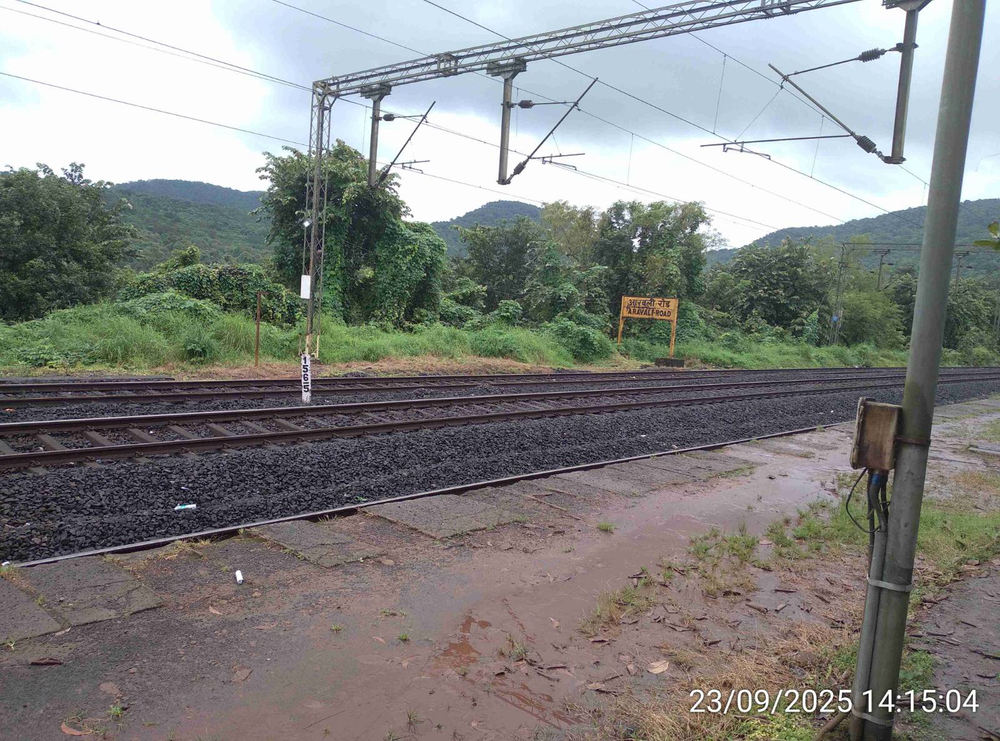
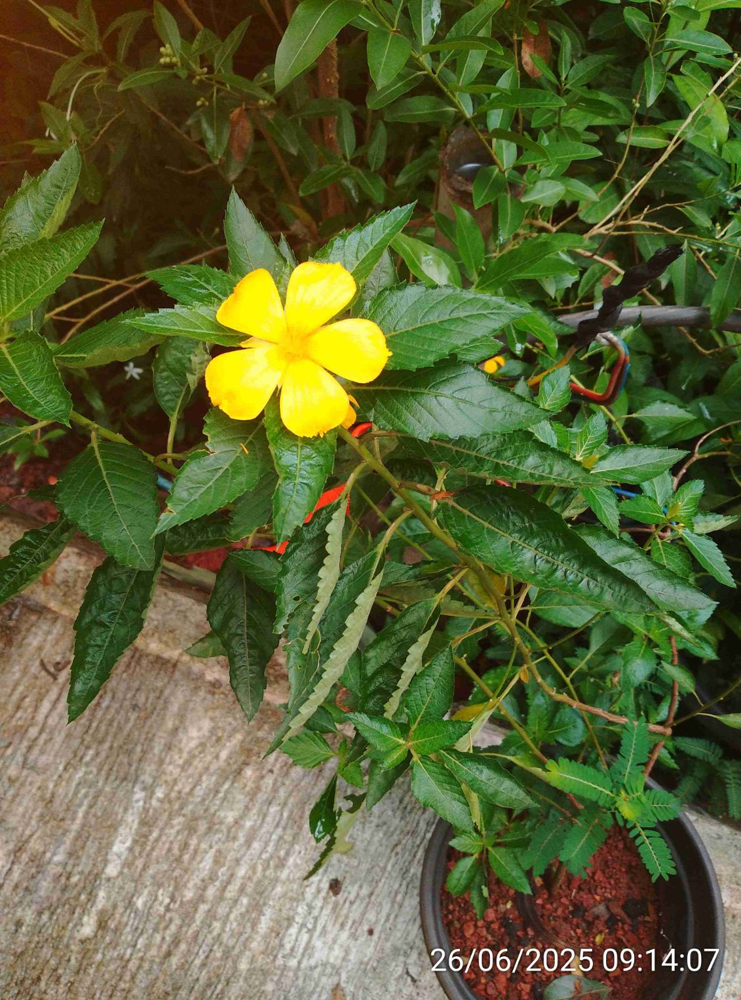
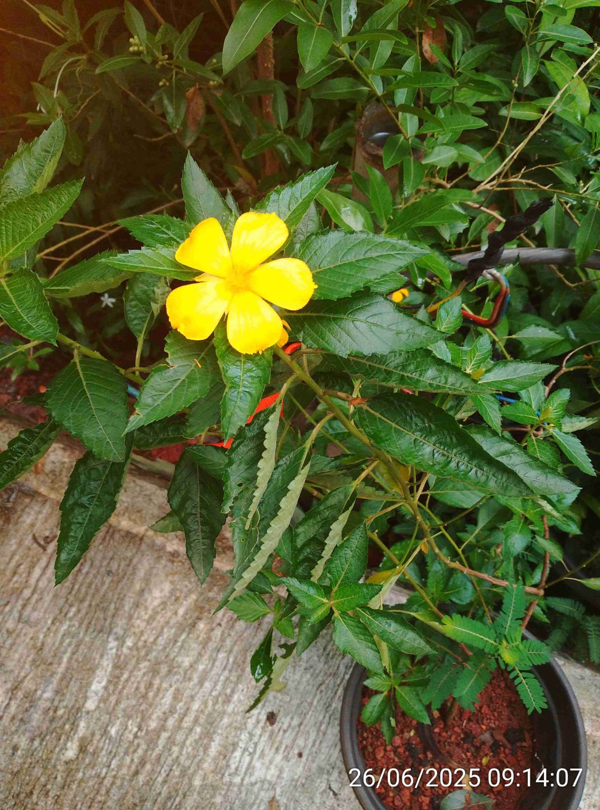

Burambad : A Pristine Village
🌍 Geography and Ecosystems
Burambad is a village in the Sangameshwar taluka of Ratnagiri district, nestled in the coastal Konkan region of Maharashtra. Its geography is a classic representation of the northern Western Ghats, a UNESCO World Heritage Site renowned for its rich biodiversity.
Key Geographical Features
- Topography: The landscape is dominated by hilly and undulating terrain, featuring pyramid-shaped hills and plateaus formed from ancient basalt lava flows (Deccan Traps).
- Area: The village spans a total geographical area of approximately 581 hectares.
- Climate: The region experiences a tropical climate with a heavy monsoon season from June to October, which is vital for the local ecosystem and agriculture.
- Water Bodies: Like much of Konkan, the area is drained by rivers flowing from the Sahyadri mountains to the Arabian Sea, creating fertile valleys and tidal estuaries.
Ecosystem Highlights
The local environment supports a mix of vibrant ecosystems:
- Laterite Plateaus: These unique, elevated flatlands host specific endemic flora and are ideal for cultivating cashew and kokum.
- Moist Deciduous Forests: Pockets of forest land are home to diverse plant and animal species, forming a crucial part of the Western Ghats corridor.
- Paddy Fields & Farmlands: The valleys are dedicated to rice cultivation and horticulture, creating seasonal wetlands that support a variety of birds and insects.
- Coastal Influence: Proximity to the coast brings influences like tidal creeks and mangrove habitats, which are vital breeding grounds and natural barriers against coastal erosion.
[Placeholder for Simple Geographic Map/Diagram]
🤝 Community and Traditional Practices
The local community has lived in harmony with the environment for generations, developing profound traditional knowledge. Our PBR captures these practices, which are essential for sustainable living:
Farming
Traditional *Kharif* and *Rabi* cropping methods, focusing on local, hardy rice varieties and rain-fed irrigation.
Medicinal Knowledge
Use of over 50 local plants (like Adulsa and Shisham) by local healers (Vaidyas) for common ailments.
📸 Glimpses of Burambad

 

 
